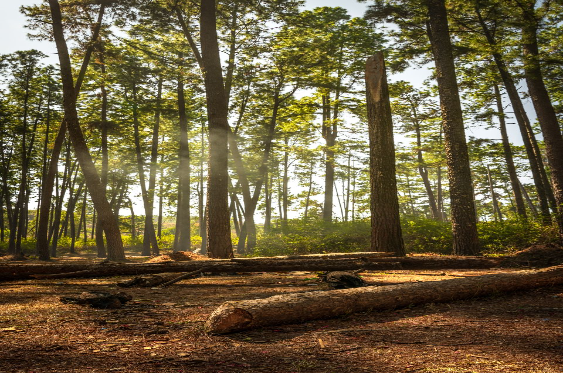

Simlipal National Park
Simlipal National Park, located in Odisha, India, is a biodiversity hotspot and one of the country's most significant tiger reserves. Covering an expansive area of lush forests, grasslands, and water bodies, the park is known for its diverse flora and fauna. Home to Bengal tigers, elephants, leopards, and numerous other species, Simlipal is a haven for wildlife enthusiasts and conservationists.
The park's topography includes picturesque waterfalls, deep valleys, and dense forests, providing a scenic backdrop for visitors. Simlipal is also inhabited by indigenous tribal communities, adding cultural richness to the region. Recognized as a UNESCO Biosphere Reserve, the park plays a crucial role in the conservation of rare and endangered species, making it a remarkable destination for both nature lovers and those passionate about wildlife preservation.
Daringbadi

Daringbadi, often referred to as the "Kashmir of Odisha," is a charming hill station situated in the Kandhamal district of Odisha, India. Known for its pleasant climate and scenic beauty, Daringbadi is surrounded by lush greenery, coffee plantations, and pine forests. The region experiences chilly temperatures during winter, offering a unique cold climate experience in Odisha.
The hill station is adorned with picturesque landscapes, including valleys, hills, and waterfalls. The Belghar Sanctuary nearby adds to the allure, showcasing diverse flora and fauna. Daringbadi's popularity as a tourist destination has grown, attracting visitors seeking a tranquil escape amidst the natural beauty of this lesser-known gem in eastern India.
Chilika Lake
Chilika Lake, located on the eastern coast of India in the state of Odisha, is the largest brackish water lagoon in Asia. Spanning over 1,100 square kilometers, the lake is separated from the Bay of Bengal by a narrow sandbar, known as the Nalabana Island. Chilika Lake is renowned for its rich biodiversity, serving as a crucial habitat for migratory birds during the winter months.
The lake supports a diverse ecosystem, including numerous fish species, Irrawaddy dolphins, and a vast variety of birdlife. The Nalabana Bird Sanctuary within the lake is a haven for bird watchers. With picturesque landscapes, fishing communities, and cultural significance, Chilika Lake stands as a prominent natural treasure and Ramsar Wetland Site, drawing both environmental enthusiasts and tourists to its shores.